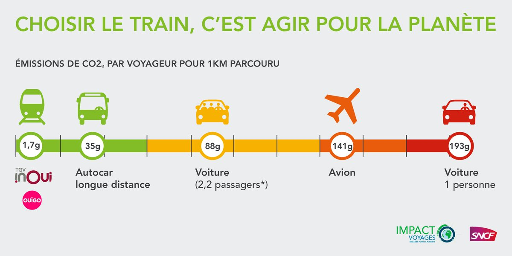

Action théorique
Dans cette partie nous reprenons les questions 5, 6, 7 et 9.
La legislation peut être une aide pour certaine entreprise comme pour la SNCF. Comme par exemple l'utlisation de la loi d'orientation mobilités(1) qui visent à promouvoir l'utilisation des transports propres (image ci-dessus), notamment les trains. Soit 28 milliards d'Euros investient durant la décennie par l'Etat dans les infrastructures de transports.
À terme, elle espère obtenir la diversification de sa clientèle via l'arrivée de nouveaux tarifs, un avantage comparé aux moyens de transports actuels, notamment sur les prix. Et aussi elle espère obtenir un retour sur investissement, principalement sur l'innovation du TGV M(2) (image ci dessous).

Pour ce qui est de l'empreinte numérique de la SNCF, elle possède d'abord plusieurs sites internets, dont sncf.com ou oui.sncf et une application mobile présente sur Android et Ios qui ont principalement pour but de commander des billets de trains ou bien se renseigner sur l'horaire des trains. Le site sncf.com a pour but d'informer sur l'entreprise en elle même comme sur leurs différents emplois, leurs engagements,... . Une relations clients est aussi disponible dont un numéro de téléphone (3635). Elle est présente sur les réseaux sociaux(principalement twitter). Mais ce qui a le plus d'impact sur l'environnement restent les terminaux (smartphones,ordinateurs,tablettes,...) et font parties de l’empreinte numérique de l’entreprise, leurs émissions représente 63% des émissions selon cet article(3), ce qui n'est pas négligeable.
Pour l’exploitation des données personnelles, elle est évidemment soumise aux contrôles de la CNIL(4), qui permet de protéger les données des utilisateurs par des traitements informatiques ou papiers. Elle est aussi contrainte par la loi sur l’empreinte environnementale du numérique(5) datant du 15 novembre 2021, qui promeut l’utilisation de datacenter moins énergivore, le renouvellement de terminaux (smartphones,ordinateurs,tablettes,...) et la favorisation d'usages numériques écologiquement vertueux comme l'écoconception des sites web d'ici 2024.